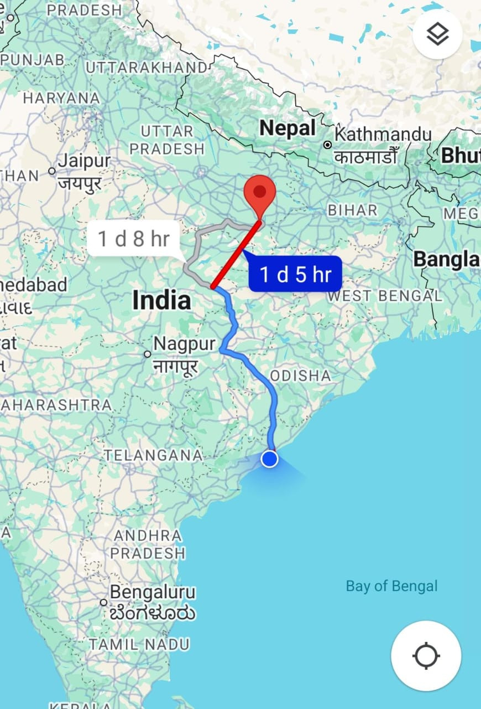

History:
Kashi Vishwanath Temple in Varanasi, Uttar Pradesh, is one of the twelve Jyotirlingas dedicated to Lord Shiva. Originally constructed centuries ago,
it was rebuilt by Ahilyabai Holkar in 1780 after multiple destructions. The temple is considered the spiritual heart of Hinduism and attracts millions of devotees seeking liberation (moksha).
Puja Rituals:
The temple follows daily rituals starting with Mangala Aarti in the early morning, followed by Bhog Aarti and Sandhya Aarti in the evening. Devotees offer milk, water, fruits, flowers,
and chant ancient Vedic hymns to honor Lord Shiva. The atmosphere resonates with bells, conchs, and devotional tunes creating a deep spiritual experience.
Festivals Celebrated:
Maha Shivaratri is celebrated with grand fervor involving night-long vigils, special abhishekas (bathing ceremonies), and processions. Other important festivals include Kartik Purnima, Makar Sankranti,
and the holy month of Shravan Maas, all drawing huge crowds for special prayers and cultural performances.
